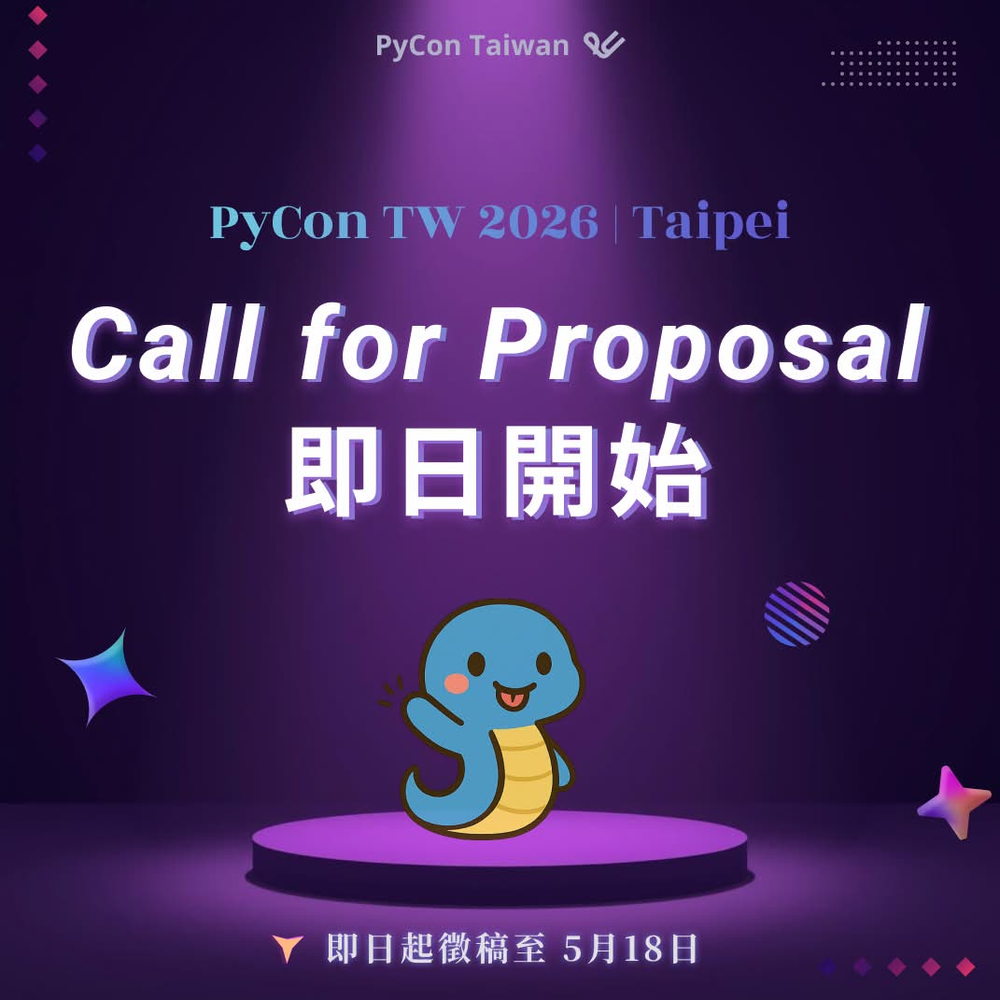

PyCon TW 2026 Call for Proposal (CfP) 即刻開跑！
Posted on Mon 13 April 2026 in announcement

PyCon TW 2026 Call for Proposal (CfP) 即刻開跑啦！🏃♂️
🐴 拍粉們，該是讓你如萬馬奔騰般的點子們耀上舞台的時候了！🐴
忘不了去年 PyCon TW 大會的精彩講題嗎？盤桓著數不盡的想法只差一個機會嗎？
新一年的 CfP 張開雙手歡迎你！
馬上前往 PyCon TW 2026 官網，來個「註冊帳號、準備好稿件、進行投稿」一條龍，分享你的 Python 之道吧！🚀
📌 投稿時間
📅 CfP 開放：4/13 (一) 00:00:00
⏳ 截止時間：5/18 (一) 23:59:59 (AoE)
📌 怎麼投稿？
到 PyCon TW 2026 官網的投稿系統註冊帳號、馬上投稿！
投稿系統在這裡👉：https://lihi1.me/QKOzP
📌 可以投蛇麼？
任何與 Python 有關的主題都能來！
無論是 AI、ML、FinTech、DA、開源專案、實踐應用甚至是開發血淚史，各種用 Python 點亮生活與世界的議題都可以！🐍
除了懶人包還想知道更多嗎？
趕快上 CfP 頁面看看👉：https://lihi1.me/D8Y4S
📌 需要靈感？
來點過去的講題刺激產能🔥
💡 PyCon TW 2025: https://lihi1.me/K50dA
💡 PyCon TW 2024: https://lihi1.me/s5hV4
💡 PyCon TW 2023: https://lihi1.me/otVvU
策馬奔向舞台，PyCon 上有你，讓我們一起打造最直擊趨勢的 PyCon TW 2026！✨
🌟 加入我們！
除了投稿，也歡迎喜歡 Python 的拍粉們，一起加入 PyCon TW 2026 團隊，成為志工吧！ 🏃♂️🏃♂️
👉PyCon TW 2026 志工報名表單：https://lihi1.me/n3GNq
PyCon TW 2026 Call for Proposals (CfP) is officially open! 🏃♂️
🐴 Pythonistas, it’s time to let your ideas race onto the stage! 🐴
Still thinking about the amazing talks from last year’s PyCon TW? Got ideas circling in your mind, just waiting for the right chance to shine?
PyCon TW 2026 is now welcoming your proposals!
Head to the official website, register an account, prepare your submission, and share your Python journey with the community. 🚀
📌 Important Dates
📅 CfP opens: 4/13 (Mon) 00:00:00
⏳ Deadline: 5/18 (Mon) 23:59:59 (AoE)
📌 How to submit
Register an account on the PyCon TW 2026 submission system and submit your proposal here:
👉 Submission Portal: https://lihi1.me/QKOzP
📌 What can you submit?
Anything related to Python! Whether it’s AI, ML, FinTech, data analysis, open source projects, real-world applications, or even your hard-earned development lessons, we’d love to hear how Python helps you build, solve, and create. 🐍
Want more details beyond the quick overview? Check out the full CfP page here:
👉 More Info: https://lihi1.me/D8Y4S
📌 Need inspiration?
Take a look at talks from previous years and get your ideas flowing 🔥
💡 PyCon TW 2025: https://lihi1.me/K50dA
💡 PyCon TW 2024: https://lihi1.me/s5hV4
💡 PyCon TW 2023: https://lihi1.me/otVvU
Ride onto the stage — PyCon is waiting for you. Let’s make PyCon TW 2026 a stage full of fresh ideas and great stories! ✨
🌟 Join the Team!
Not ready to speak but still want to be part of the magic? We are also looking for passionate volunteers to join the PyCon TW 2026 crew! 🏃♂️🏃♂️
👉 Volunteer Registration Form: https://lihi1.me/n3GNq